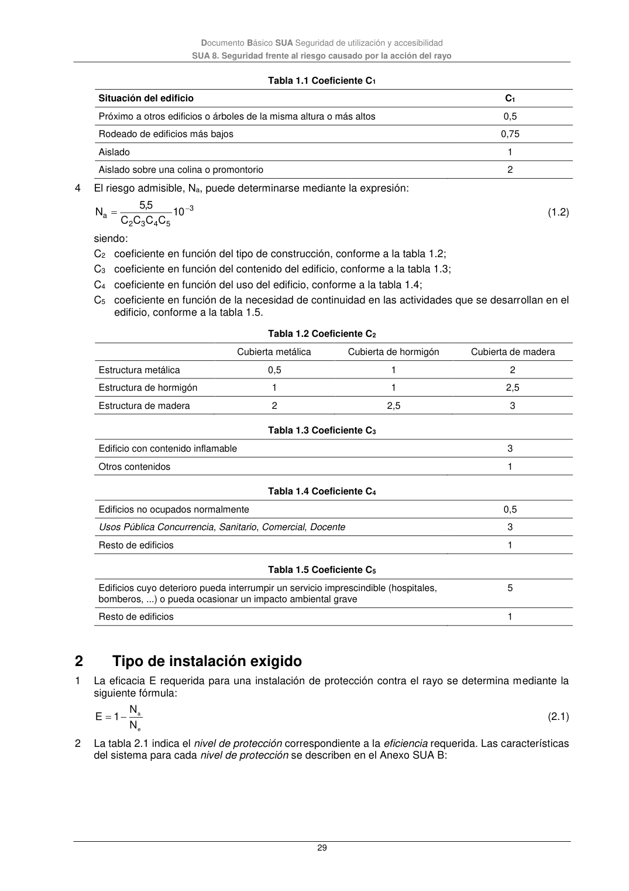

DB-SUA Seguridad de utilización y accesibilidad · edición 2022-06-14 · capa oficial
Documento DB-SUA-oficial · SHA-256 del PDF 3cfb5bbb135e8f02faebd8b844e03e8947994c18d4c9e675a7d2aa37d1cd5958
Copia fiel del PDF fuente · Fuente oficial
Ficha de la disposición en la fuente oficial
Formatos: JSON del segmento · Markdown
Procedimiento de verificación 1 Será necesaria la instalación de un sistema de protección contra el rayo, en los términos que se es- tablecen en el apartado 2, cuando la frecuencia esperada de impactos Ne sea mayor que el riesgo admisible Na. 2 Los edificios en los que se manipulen sustancias tóxicas, radioactivas, altamente inflamables o ex- plosivas y los edificios cuya altura sea superior a 43 m dispondrán siempre de sistemas de protec- ción contra el rayo de eficiencia E superior o igual a 0,98, según lo indicado en el apartado 2. 3 La frecuencia esperada de impactos, Ne, puede determinarse mediante la expresión: 6 1 e g e 10 C A N N [nº impactos/año] (1.1) siendo: Ng densidad de impactos sobre el terreno (nº impactos/año,km2), obtenida según la figura 1.1; Figura 1.1 Mapa de densidad de impactos sobre el terreno Ng Ae: superficie de captura equivalente del edificio aislado en m2, que es la delimitada por una línea trazada a una distancia 3H de cada uno de los puntos del perímetro del edificio, siendo H la altu- ra del edificio en el punto del perímetro considerado. C1: coeficiente relacionado con el entorno, según la tabla 1.1. Documento Básico SUA Seguridad de utilización y accesibilidad SUA 8. Seguridad frente al riesgo causado por la acción del rayo 29 Tabla 1.1 Coeficiente C1 Situación del edificio C1 Próximo a otros edificios o árboles de la misma altura o más altos 0,5 Rodeado de edificios más bajos 0,75 Aislado 1 Aislado sobre una colina o promontorio 2 4 El riesgo admisible, Na, puede determinarse mediante la expresión: 3 5 4 3 2 a 10 C C C C 5,5 N (1.2) siendo: C2 coeficiente en función del tipo de construcción, conforme a la tabla 1.2; C3 coeficiente en función del contenido del edificio, conforme a la tabla 1.3; C4 coeficiente en función del uso del edificio, conforme a la tabla 1.4; C5 coeficiente en función de la necesidad de continuidad en las actividades que se desarrollan en el edificio, conforme a la tabla 1.5. Tabla 1.2 Coeficiente C2 Cubierta metálica Cubierta de hormigón Cubierta de madera Estructura metálica 0,5 1 2 Estructura de hormigón 1 1 2,5 Estructura de madera 2 2,5 3 Tabla 1.3 Coeficiente C3 Edificio con contenido inflamable 3 Otros contenidos 1 Tabla 1.4 Coeficiente C4 Edificios no ocupados normalmente 0,5 Usos Pública Concurrencia, Sanitario, Comercial, Docente 3 Resto de edificios 1 Tabla 1.5 Coeficiente C5 Edificios cuyo deterioro pueda interrumpir un servicio imprescindible (hospitales, bomberos, ...) o pueda ocasionar un impacto ambiental grave 5 Resto de edificios 1 2
